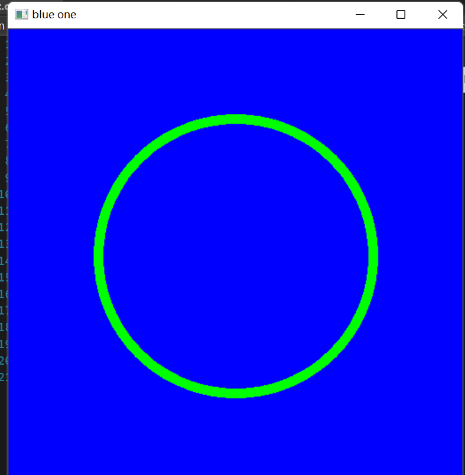
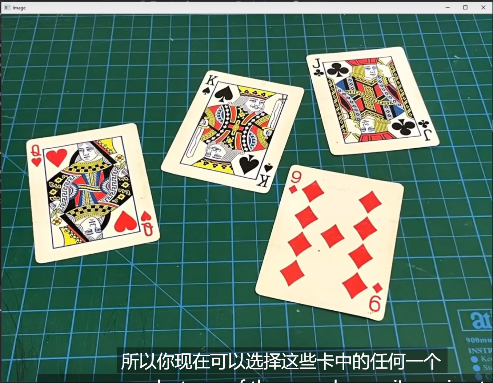
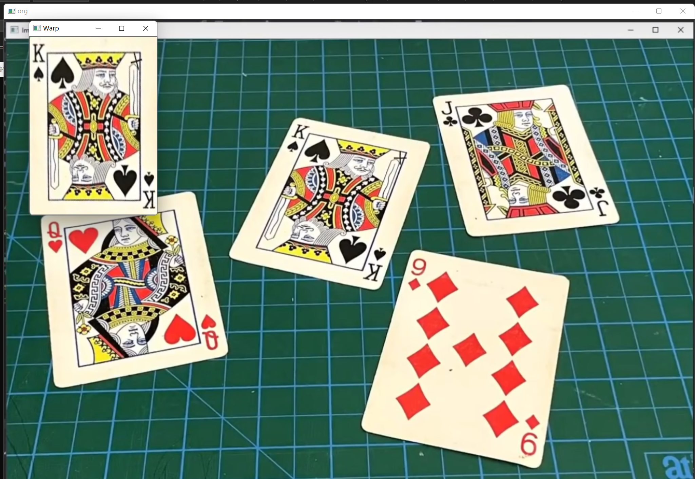

Opencv in Visual Studio C(2)
Opencv with Visual Studio
纯图像应用
Opencv当然可以创建纯色的图片。只需要我们指定图像的种类和每一位的BGR值
Mat img(height,width,imgType,bkColorScalar); 今为了创建一个彩色图像，选择 CV_8UC3，表明是CV下的8bit unsigned char（就是0~255）下的3通道图.
太单调了，画个圆：
#include<opencv2/opencv.hpp>
#include<iostream>
#include<string>
using namespace std;
using namespace cv;
int main()
{
// create a blank img
// CV_8bits(2~255) Unsigned Char 3dims
Mat img(512, 512, CV_8UC3, Scalar(255,0,0));
//create a circle
circle(img, Point(256, 256), 155,Scalar(0,255,0),10);
imshow("blue one", img);
waitKey(0);
}
当然可以玩其他东西：不过，也就是可以查看API自己搞定：
#include<opencv2/opencv.hpp>
#include<iostream>
#include<string>
using namespace std;
using namespace cv;
int main()
{
// create a blank img
// CV_8bits(2~255) Unsigned Char 3dims
Mat img(512, 512, CV_8UC3, Scalar(255,0,0));
//create a circle
circle(img, Point(256, 256), 155,Scalar(0,255,0),10);
// rectangle create
rectangle(img, Point(150, 150), Point(300, 300), Scalar(255, 255, 255), FILLED);
// line
line(img, Point(200, 400), Point(400, 400), Scalar(100, 100, 100), 20);
// putText
putText(img, "hello,world", Point(100, 100), FONT_HERSHEY_DUPLEX, 2, Scalar(0, 0, 0));
imshow("blue one", img);
waitKey(0);
}
Warp我们的图像：图像变换1
下面我们继续！

现在，我们想要变换这中间的一个扑克牌使之正立！我们转向：先把目标放到一个Demo 上，就是King这张牌。现在，我们找出它的四个点！不必打开画图，我们使用 setMouseCallBack这个函数！
void setMouseCallback(const String& winname, MouseCallback onMouse, void* userdata = 0); winname就是目标窗口名称，那这个 MouseCallback是啥呢？进一步去看
typedef void (*MouseCallback)(int event, int x, int y, int flags, void* userdata); 再明显不过了，我们重写一个函数，其原型是如上的，我们编写一个！
void onMouse(int event, int x, int y, int flags, void*) {
if(event == EVENT_LBUTTONDOWN)
cout << x << " " << y<<endl;
}int main()
{
string path = "C:\\Users\\usr\\Desktop\\My coding repositary\\learnopencv\\2\\source_file\\1.png";
Mat warp = imread(path);
if (warp.empty()) {
return -1;
}
imshow("1", warp);
setMouseCallback("1", onMouse);
waitKey(0);
} 啊哈！
这几个点收下了！
然后，我们想要立正之后，图片的宽和高也应当要给出来！
float w = 250, h = 350;
Point2f points[4] = { {575 ,195},{440 ,465},{733 ,528},{833 ,247} };
Point2f after[4] = { {0,0},{w ,0},{0 ,h},{w ,h} }; 然后转向API的调用！
mat = getPerspectiveTransform(points, after);
warpPerspective(warp,imgWarp, mat, Point(w, h));
imshow("Warp", imgWarp); 
全体目光向我看齐，我宣布个事！是我Charliechen写的这篇文章！(?)